BASE KEEP
The Keep · The Diamond
Fun tape · not news
The X
MLB memes and shitposts pulled from X. Pictures when the wire carries them.
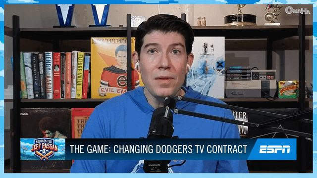
Reddit[Jeff Passan] The Dodgers' local-TV deal is a profound competitive advantage. Because of a bankruptcy-court ruling, the team will shield more than $1.3 billion from rev sharing ove
submitted by /u/f0urxio [link] [comments]
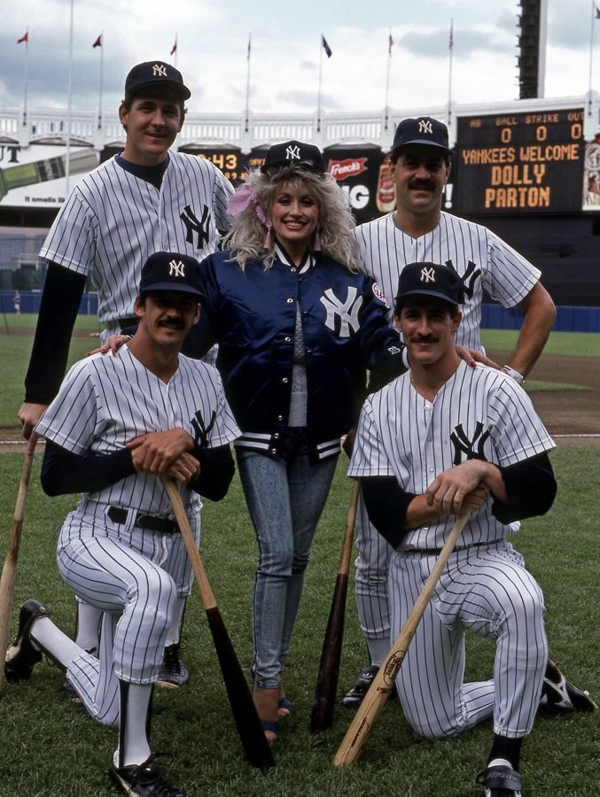
RedditRIP to a famous Nazi sympathizer
submitted by /u/YodaForceGhost [link] [comments]
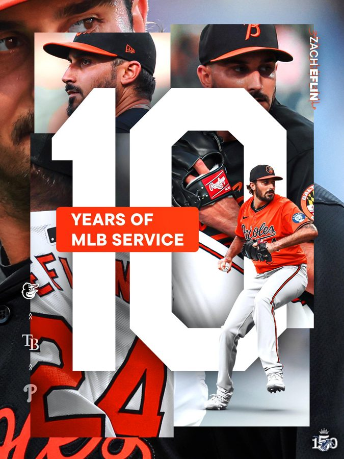
Reddit[Orioles] Congrats on reaching 10 years of MLB service time, Zach 🙌
submitted by /u/T_Raycroft [link] [comments]
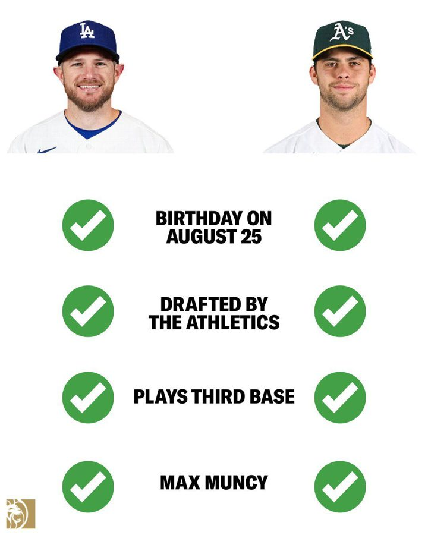
RedditIt’s Max Mucy’s birthday today
submitted by /u/Revolutionary_Use227 [link] [comments]
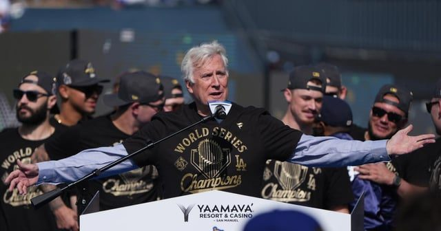
Reddit[LA Times] Beneath the Dodgers' latest sweep, the scary rumblings of a team sale persist: "Ohtani has a clause famously included in his contract that allows him to leave if Friedma
submitted by /u/f0urxio [link] [comments]
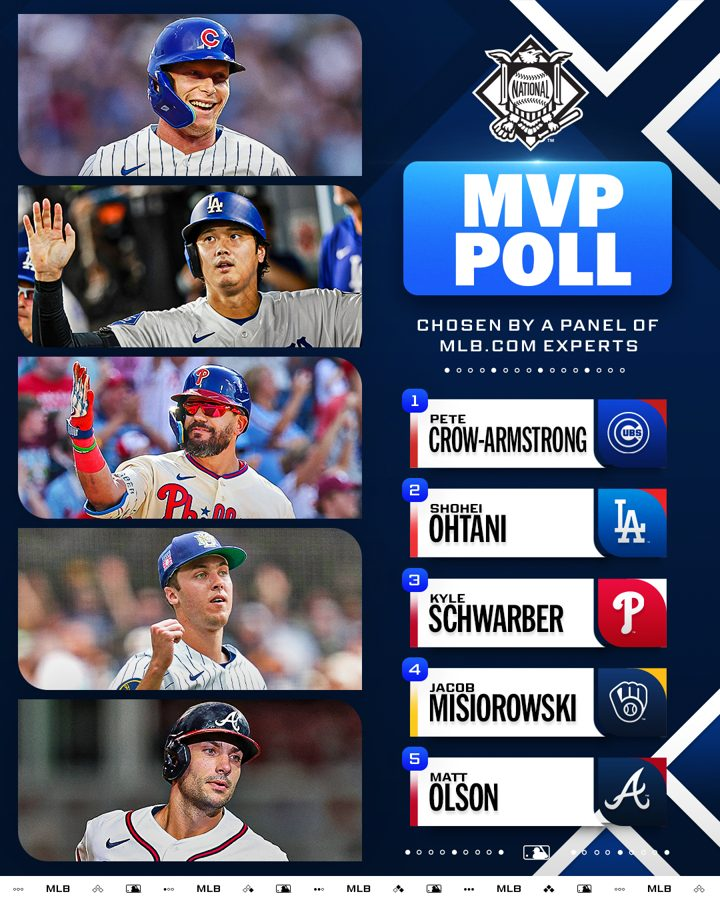
RedditPete Crow-Armstrong and Yordan Alvarez hold the top spots in the latest MVP Polls
submitted by /u/MLBOfficial [link] [comments]
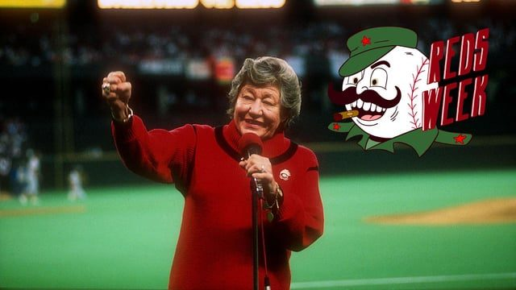
RedditMarge Schott Was A Five-Tool Bigot Who Would Have Thrived In Any Era
submitted by /u/aresef [link] [comments]
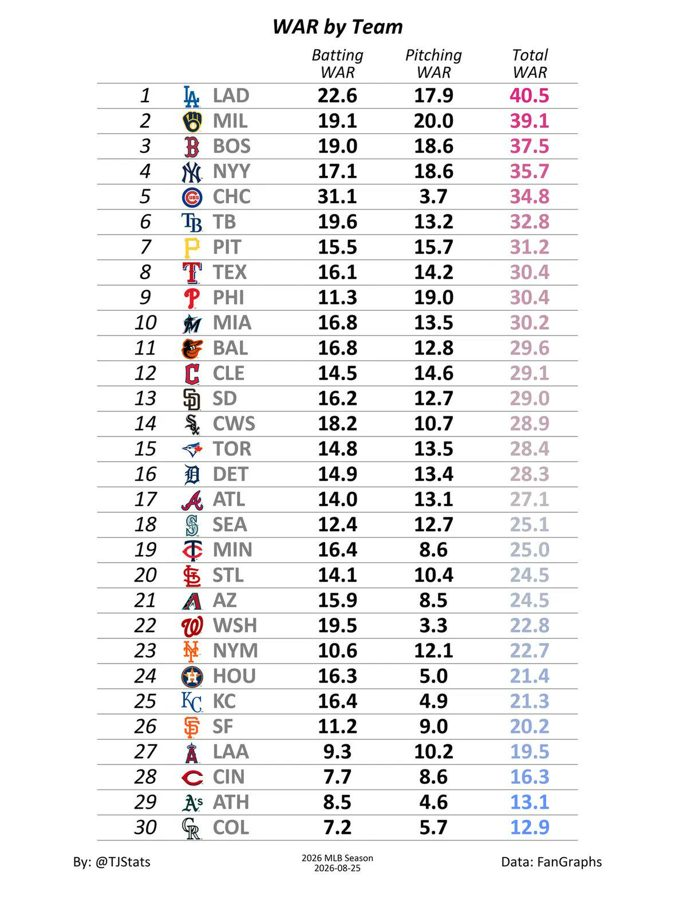
Reddit[TjStats] WAR by Team.
submitted by /u/Mg29reaper [link] [comments]
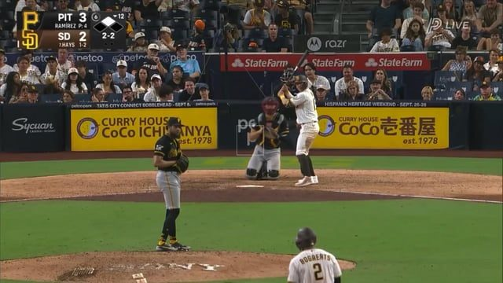
Reddit[OptaSTATS] There have been over 60,000 saves across MLB since saves became an official stat in 1969. Yohan Ramírez’s save last night is the only one to include 3 strikeouts with t
submitted by /u/mfenton29 [link] [comments]
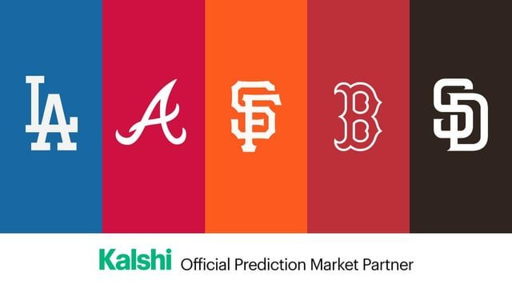
RedditKalshi partners with 5 MLB teams. Becomes prediction market partner of The Atlanta Braves, Boston Red Sox, Los Angeles Dodgers, San Diego Padres, and San Francisco Giants
submitted by /u/Competitive-Body-286 [link] [comments]
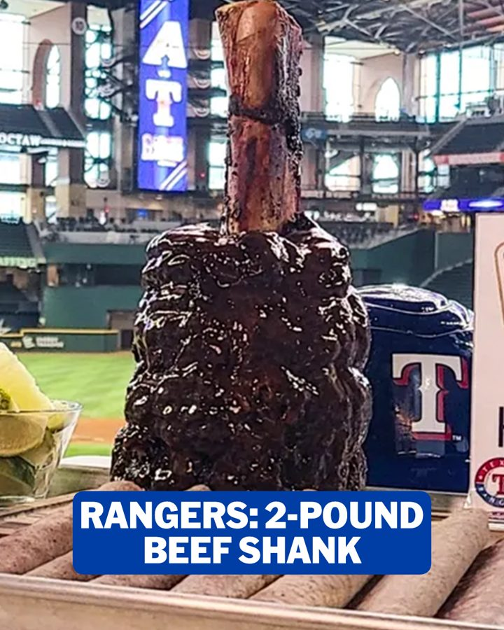
RedditOur Ballpark Bites Bracket is now live! Vote for the craziest food at ballparks right now. Vote now!
Check out the bracket to vote for the craziest food in MLB right now! https://www.mlb.com/moments/experiences/ballpark-bites-bracket submitt
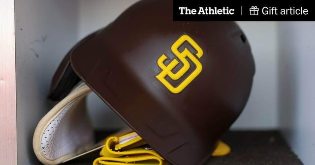
Reddit[Lin] Padres minor-league catching coordinator released on bond after ICE detainment: Source (Gift Article)
submitted by /u/Knightbear49 [link] [comments]
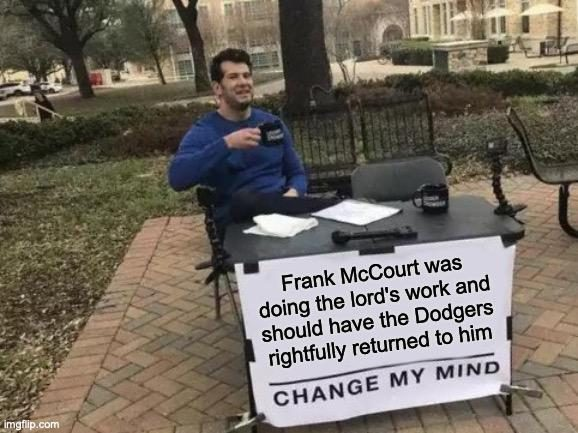
RedditGive him the Dodgers back
submitted by /u/Ok_Assumption_5366 [link] [comments]
 Reddit
RedditKalshi partners with 5 MLB teams. Becomes prediction market partner of The Atlanta Braves, Boston Red Sox, Los Angeles Dodgers, San Diego Padres, and San Francisco Giants
submitted by /u/Knightbear49 [link] [comments]
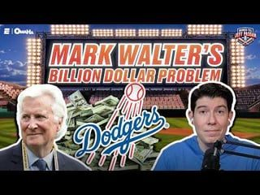
RedditInside Dodgers Owner Mark Walter’s Billion-Dollar Insurance Scandal | Sources Tell Jeff Passan
submitted by /u/Skullbone211 [link] [comments]
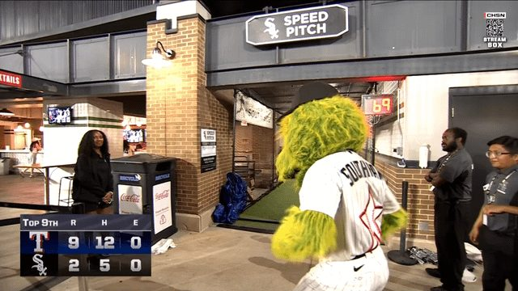
RedditWhite Sox mascot Southpaw slings 79 mph fastball
submitted by /u/PopeSouthpaw [link] [comments]
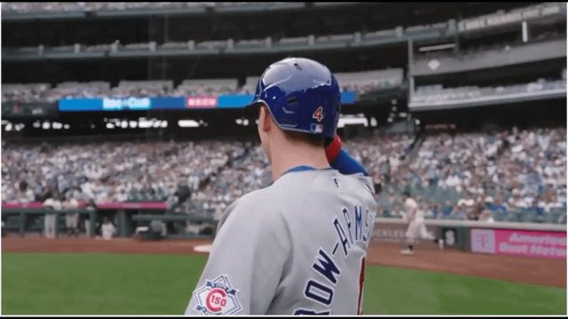
RedditCal Raleigh has a 2.482 OPS since PCA slapped his ass
submitted by /u/PopeSouthpaw [link] [comments]
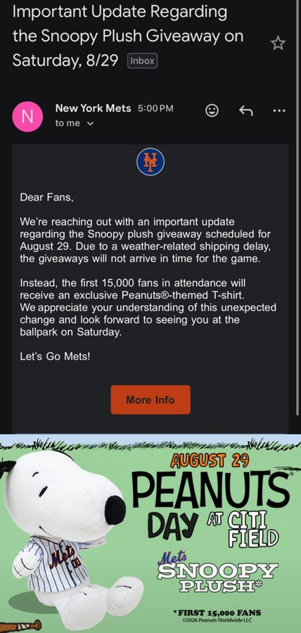
RedditMets send out email cancelling much-awaited Snoopy Plush night. Mrs. Met fleshlights with interchangeable anal sleeve will be given away instead
submitted by /u/guhguhguhguhguhH [link] [comments]
 Reddit
RedditMets send out email cancelling much-awaited Snoopy Plush night. Peanuts T-shirts will be given away instead
submitted by /u/ChicknCutletSandwich [link] [comments]
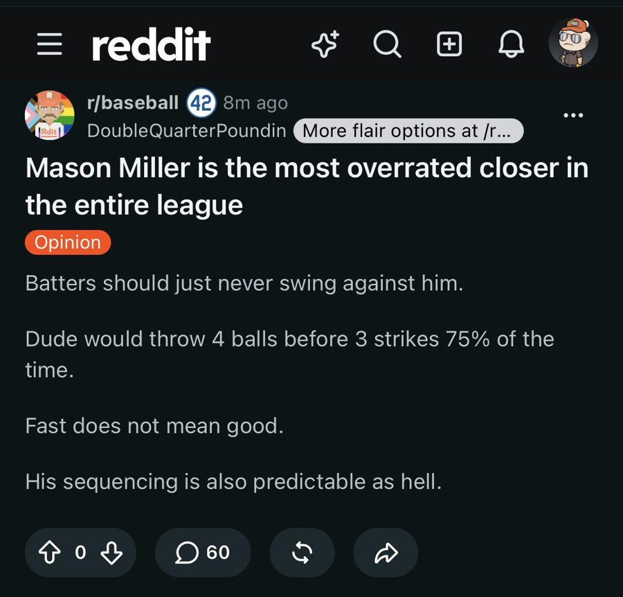
RedditOutjerked by the main sub again
Mods can we please have this as a flair? submitted by /u/Green-Cricket-8525 [link] [comments]
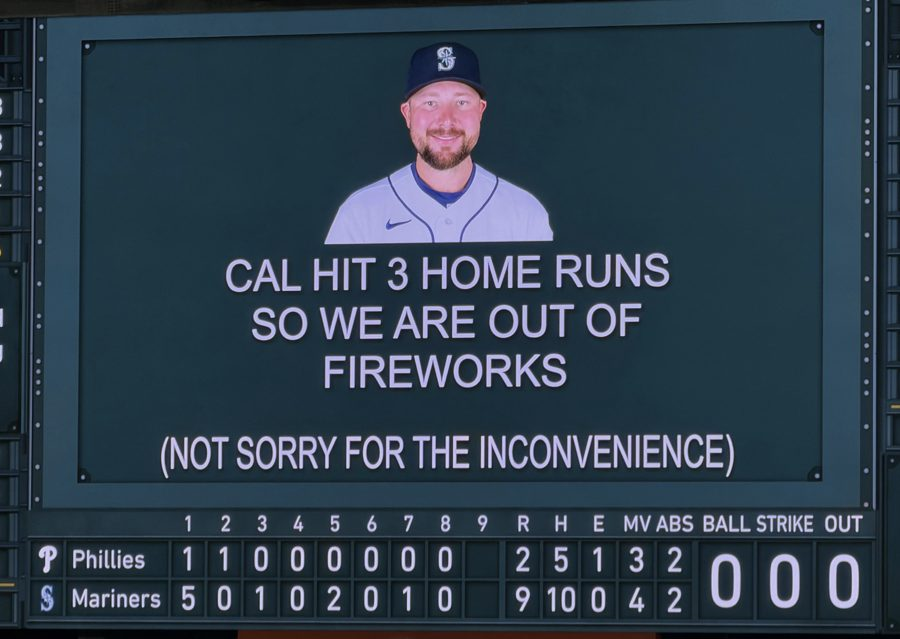
RedditSeattle Mariners are currently out of fireworks due to Cal Raleigh's insane performance!
submitted by /u/Julio44Rod [link] [comments]
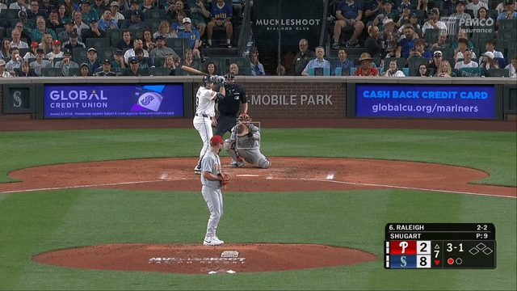
RedditCAL RALEIGH 1ST CAREER 3 HOME RUN GAME IS THE 1ST BY A MARINER IN THE HISTORY OF TMOBILE PARK AT HOME
submitted by /u/sportsandthesorts [link] [comments]
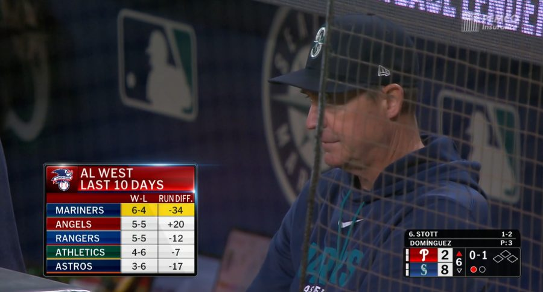
RedditOver the Past 10 Days, the Seattle Mariners been the best team of the AL West...while having the worst Run Differential of the division in that span (by a margin of 17 runs)
submitted by /u/The_Throwback_King [link] [comments]
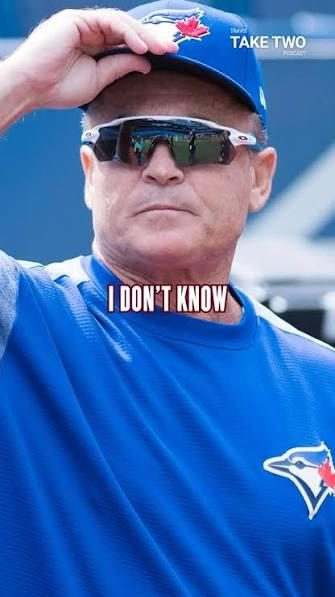
RedditA man who has devoted his career to baseball shares his wisdom.
submitted by /u/junklardass [link] [comments]
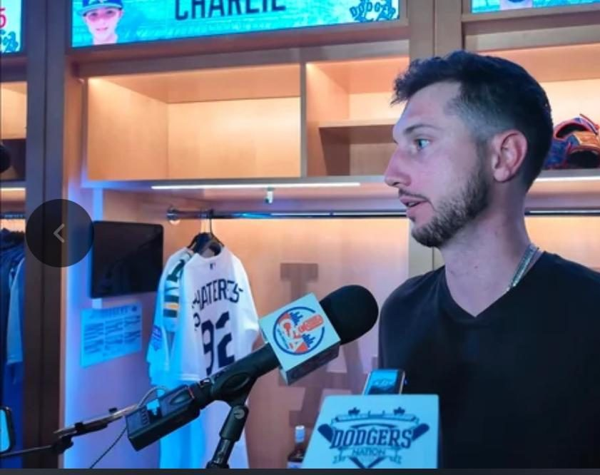
RedditDodgers sign Freddie Freeman’s son Charlie to replace Tucker in RF
Does anyone know the details of the new contract? submitted by /u/Present_State546 [link] [comments]
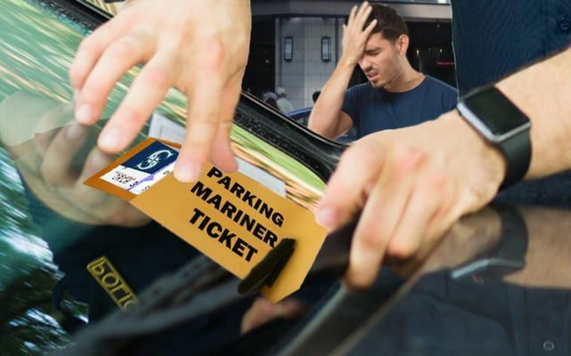
RedditTraffic Cops Now Issuing Mariners Tickets to Improperly Parked Cars
submitted by /u/aresef [link] [comments]
RedditHis cancer is spreading
submitted by /u/Gemnist [link] [comments]
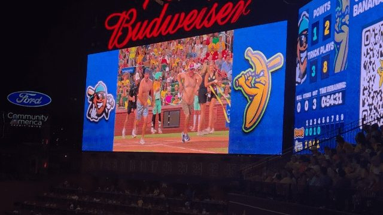
RedditLet's make a sandwich!
How could you not be romantic about baseball? submitted by /u/engineerdrummer [link] [comments]
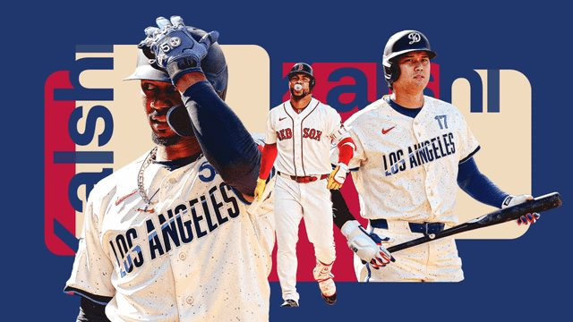
RedditMild Pitch: Dodgers, Red Sox Quietly Roll Out Kalshi Deals
submitted by /u/Competitive-Body-286 [link] [comments]
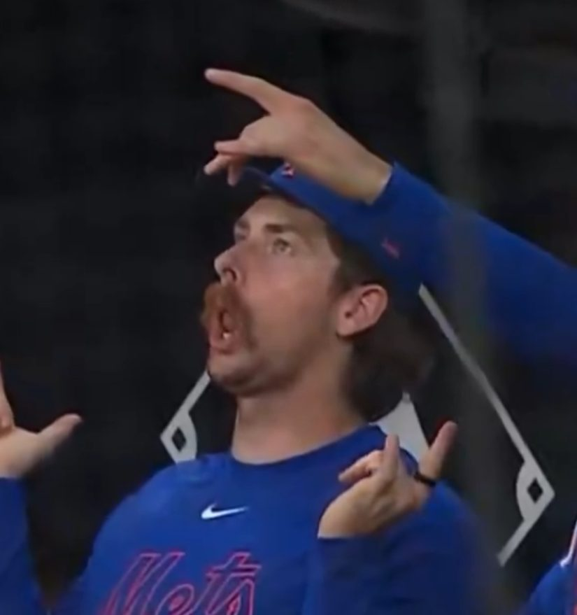
Redditsnoochie boochies
submitted by /u/Murphuffle [link] [comments]
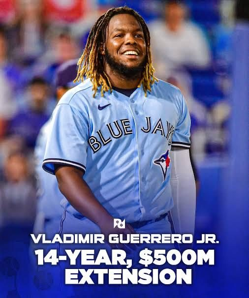
RedditJust a reminder that this dude never hit a homerun at his home ballpark this year.
submitted by /u/zeke_maximus11 [link] [comments]
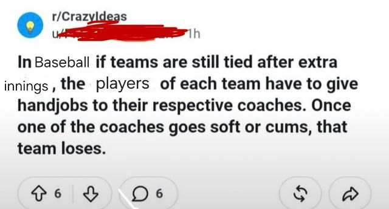
RedditWe NEED this
submitted by /u/Sleep_Is_A_scam2099 [link] [comments]
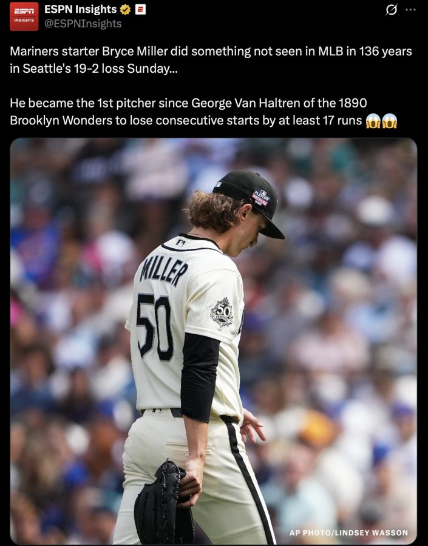
RedditGeorge Van Haltren outjerked by Bryce Miller
submitted by /u/Ok_Assumption_5366 [link] [comments]
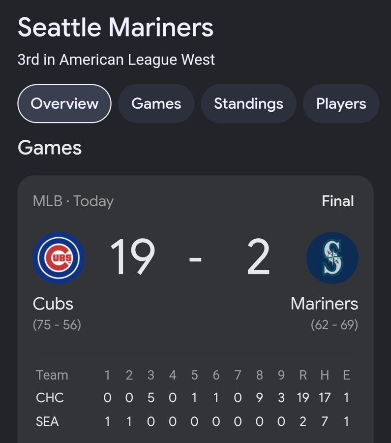
RedditOutjerked by mariners again
submitted by /u/Sleep_Is_A_scam2099 [link] [comments]
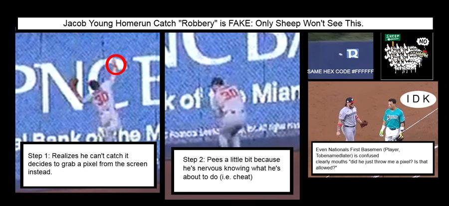
RedditWatch Man Fred do nothing about this blatant cheating
submitted by /u/MeatballDom [link] [comments]
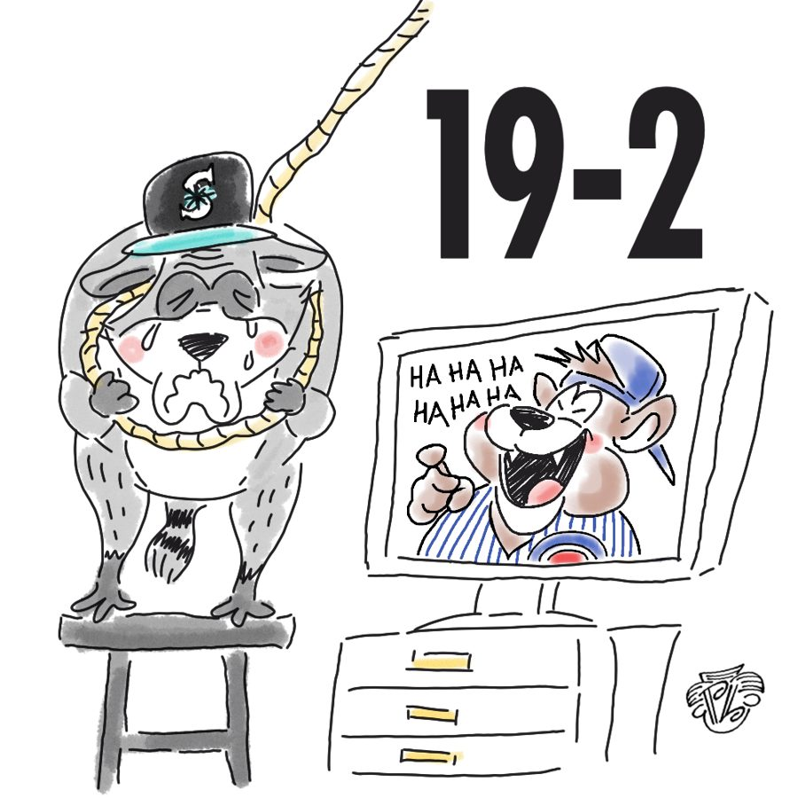
RedditMariner... again
submitted by /u/PanaLemon [link] [comments]